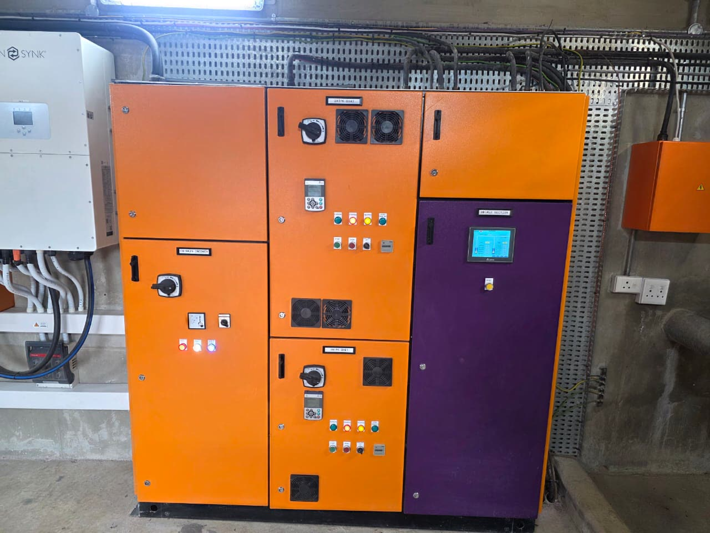
Estates
Monitor shared boreholes, reservoirs and pump stations. Smarta can start or stop pumps automatically as reservoir levels change.
Need household meters and billing? See Smarta Estate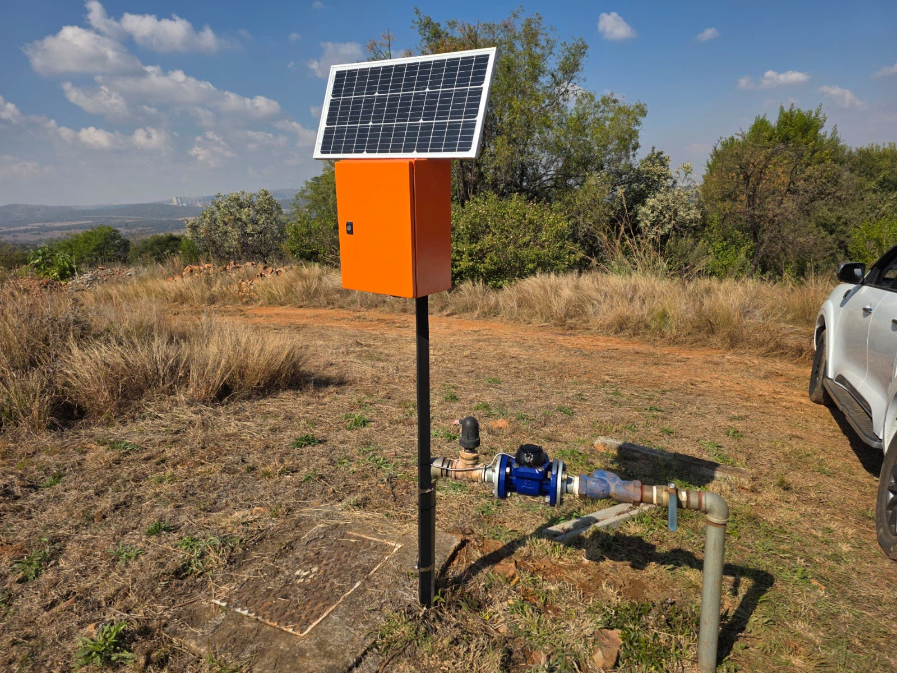
Remote monitoring & automated pump control
Smarta monitors pumps, boreholes and reservoirs, then operates the system automatically when levels, pressure or schedules call for it. Your team can check in from anywhere.
For estates, mines, farms and municipalities.
Solar-powered borehole installation · Gauteng
At the pump and on your screen
Smarta connects the equipment on site to Smarta Online and the mobile app. Your team sees what is happening, receives alarms and can let level, pressure or schedule rules operate the pumps automatically.
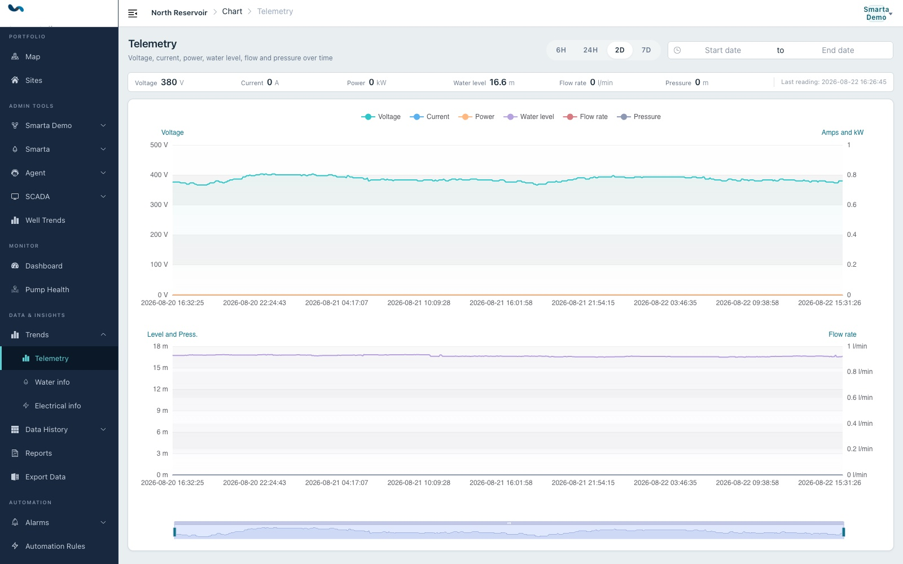
What changes day to day
years in business
active sites
developed and supported locally
Where Smarta works
Some customers monitor one borehole. Others manage networks of pumps and reservoirs. Each installation is set up for the equipment on site and the people who need access.

Monitor shared boreholes, reservoirs and pump stations. Smarta can start or stop pumps automatically as reservoir levels change.
Need household meters and billing? See Smarta Estate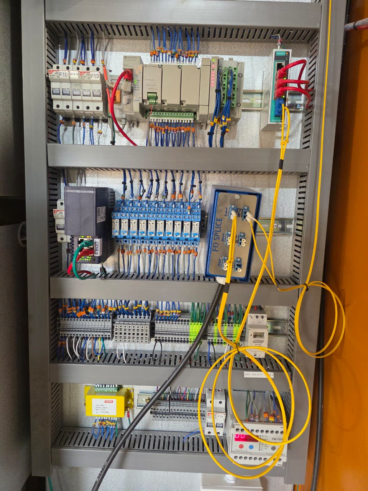
Monitor dewatering and process-water systems across remote areas. Check the site before sending a team out.
Check boreholes, dams, reservoirs and irrigation pumps from your phone, even when they are spread across the farm.
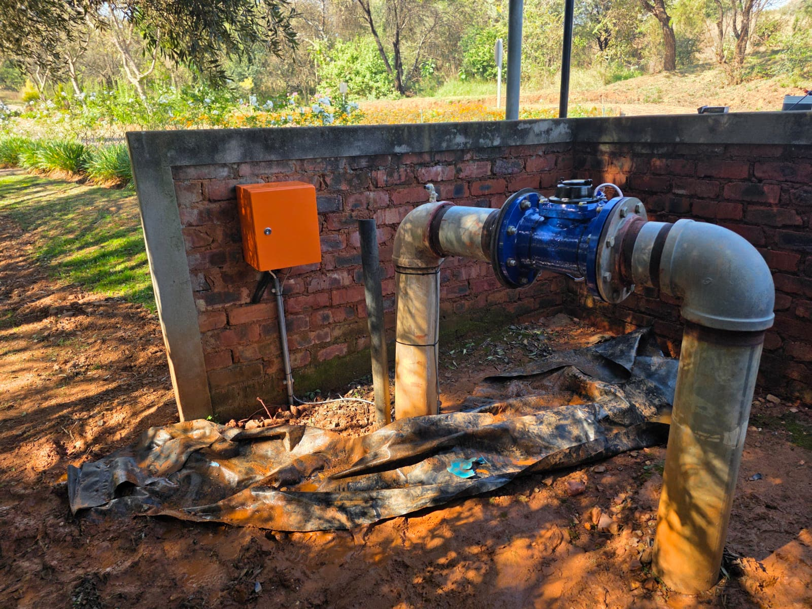
Monitor pump stations, reservoirs and supply points from one place. Keep a record for operations and maintenance.
In operation
This customer runs 15 connected sites through Smarta. The operations team can check the whole network in one place instead of treating every borehole and reservoir as a separate system.
Request a site assessmentEach reservoir has enabled rules for high and low water levels. Those thresholds can operate connected pumps without waiting for a manual site check.
Live conditions, alarms and history are available from the same web and mobile platform across the boreholes and reservoirs.
How Smarta works
See what is running from a computer or phone. Smarta can also operate pumps automatically when water levels or pressure change.
Start or stop pumps when a reservoir reaches a chosen level, when pressure changes or at scheduled times.
Level, pressure and schedule rulesView pump status, water levels, flow, pressure and water-quality readings for one site or a larger network.
Includes web and mobile accessSend alerts to the people responsible for each site, review graphs and history, and download reports.
Alerts and operating recordsSmarta Online
This two-day view shows a borehole starting and stopping, with the water level, flow and pressure changing alongside it. Smarta Online keeps the graph, alarms, reports and automatic controls in one place.
Your sites
Tell us how water moves around the site. We’ll help you decide what to monitor and what can run automatically.
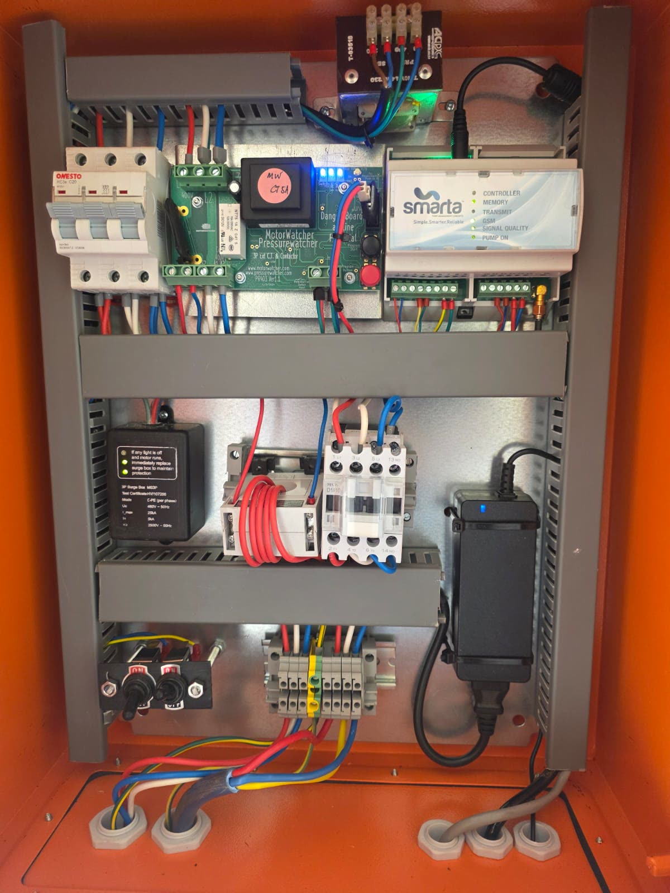
Controller integrated into an existing pump panel.
Site assessment & installation
We start by looking at the site, the existing control panel and what you need to monitor, automate or control. The installation is then specified for that site.
We review the pumps, reservoirs, controls and available connectivity.
The required Smarta controller and sensors are installed and connected to your account.
We help with alarm settings, reports and changes after the system is commissioned.
Smarta Mobile
Open a site to see its current status, graphs and alarms. Authorised users can also operate compatible pumps and update schedules.
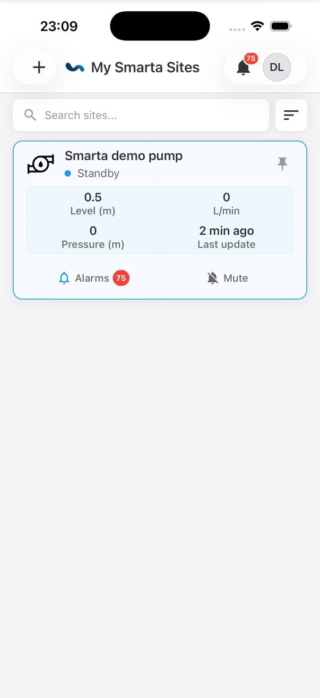
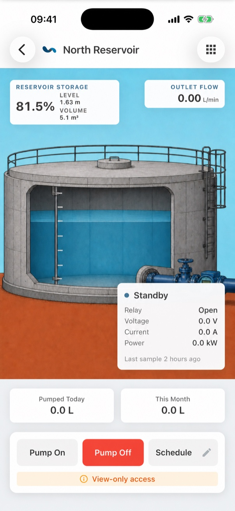
Installation photos
These photos show field enclosures, pump control panels, flow meters and plant rooms from current Smarta work.
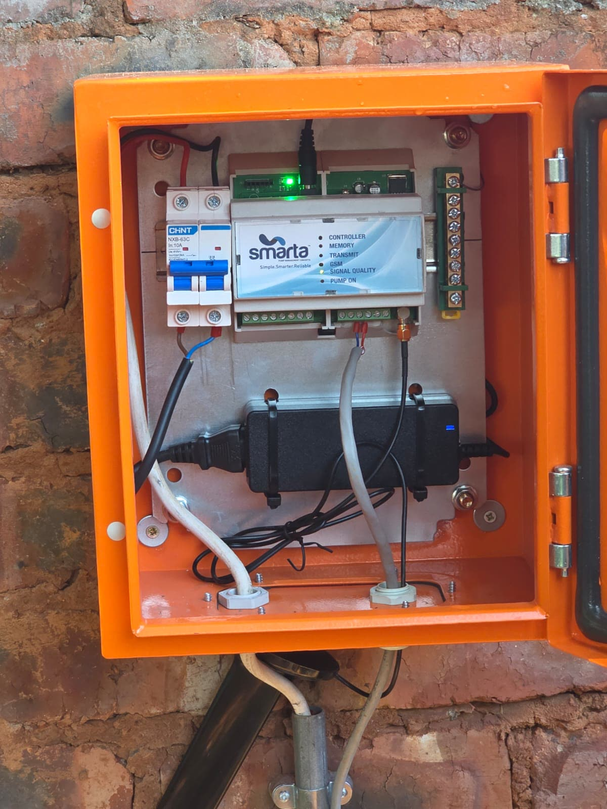

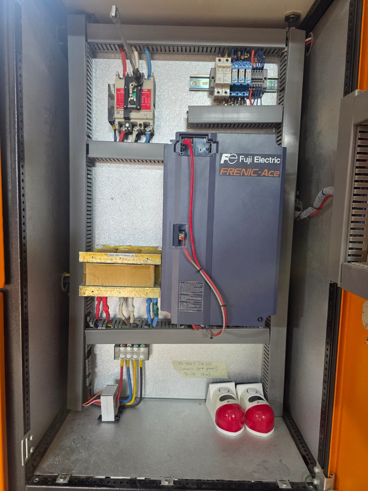
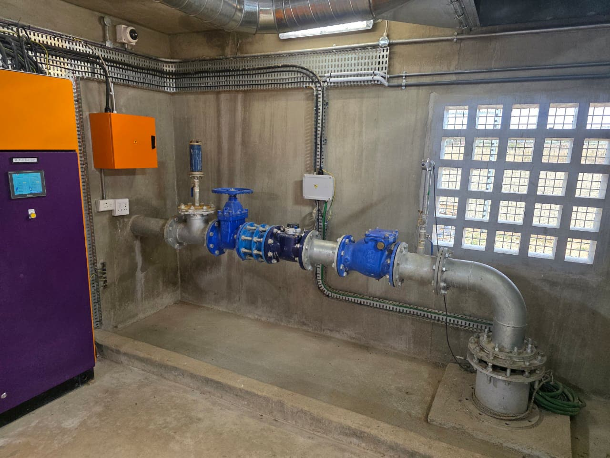
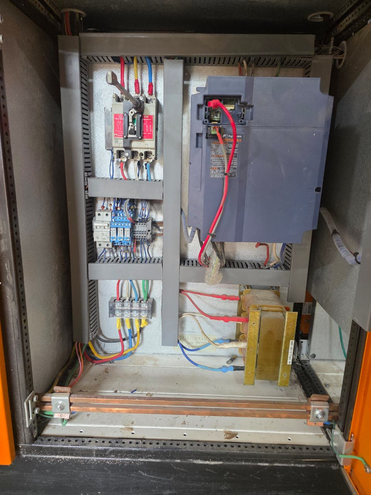

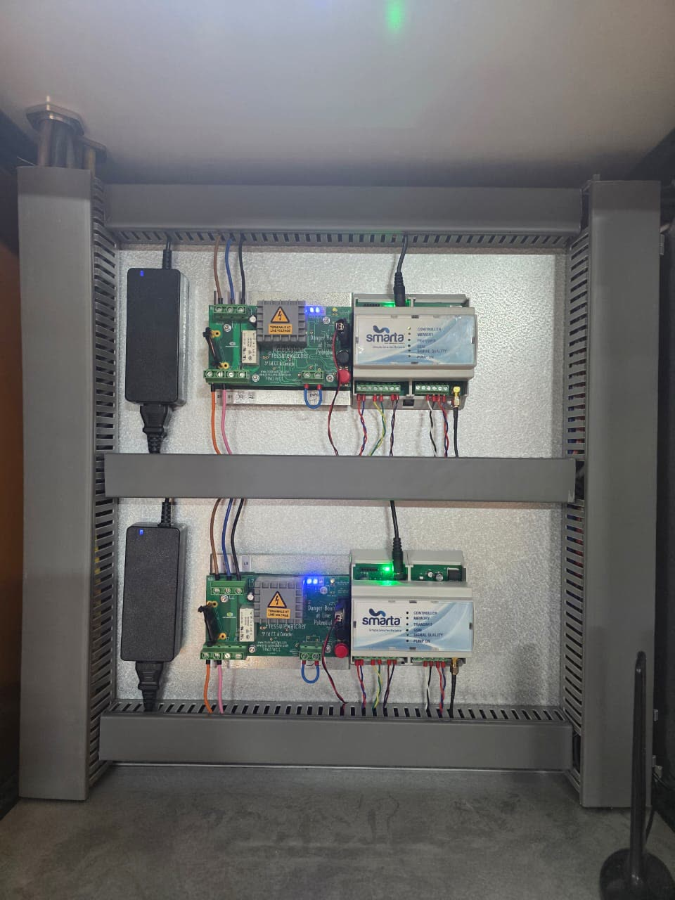
About Smarta
Smarta helps people manage pumps and water systems without having to be on site.
We are based in Gauteng and support customers across Southern and Sub-Saharan Africa. We work with customers, distributors and installation partners from the site assessment onwards.
FAQ
Need a site-specific answer? Send the team a photo of your panel and a short description of the system.
Ask about your siteSmarta is used by residential estates, mines, farms, municipalities and other organisations that operate pumps and water systems.
Depending on the installation, Smarta can show pump status, reservoir and borehole levels, flow, pressure, water-quality readings, alarms and operating history.
Yes. Automation rules can start or stop pumps when a reservoir reaches a set level, when pump pressure crosses a set point or according to a schedule.
Yes. Where remote control is configured, authorised users can start or stop compatible pumps from the Smarta web and mobile applications.
Usually. We assess the existing pump panel and sensors, then confirm what can be monitored or controlled at the site.
Yes. Customers can use the secure Smarta web platform, and Smarta Mobile is available for iOS and Android.
Smarta manages pumps, boreholes, reservoirs and water infrastructure. Smarta Estate is a separate Smarta product for remote household and bulk water metering, leak alerts, consumption analytics and estate billing.
Smarta is based in Gauteng, South Africa, and supports installations across Southern and Sub-Saharan Africa.
Site assessment
Send us a short description of the site and what you need to monitor, automate or control. Photos of the pump panel or reservoir setup are useful.
Email the Smarta team
info@smarta.co.za→ WhatsApp us a photo of your pump panelBased in Gauteng · Supporting Southern & Sub-Saharan Africa